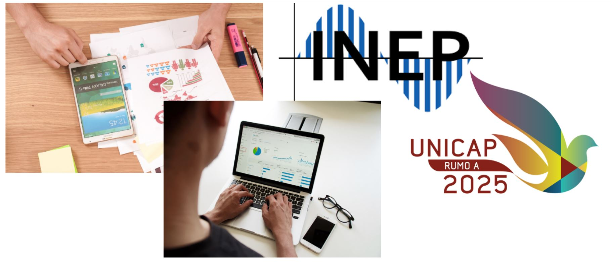

<app-menu></app-menu>


<html>
 <head>
     <meta charset="UTF-8"/>
     <title>Sobre</title>
 </head>
 <body>
	 <h4>Sobre</h4>
	 
	<h6 text-align: center>
		Do Arzebaijão, analiz significa análise.<br/>
		O seguinte projeto foi desenvolvido para a Universidade Católica de Pernambuco,
		o qual visa fazer a análise dos dados presentes no data base do INEP.
	</h6>
 </body>
 </html>

